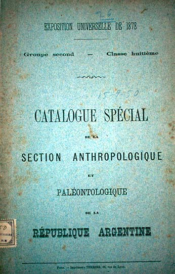

|
|  |
|
Florentino Ameghino, Catalogue spécial de la section anthropologique et paléontologique de la République Argentine
|
The meaning of relics depends, we could summarize, on the particular hermeneutics applied to suture their constitutive incompleteness: according to a particular classification, which in turn leads to particular disciplinary procedures of 'reading', a fragment of past or distant activity or the remains of a human body can become an index of identity or of difference, or even of both. Even the remainders of remote pasts, as they are being mobilised by the apparatus of science, continuously generate new meanings in the present: thus, for instance, the discovery of large fossils in the Patagonian South served not only as an incentive for a new generation of Argentinian naturalists but also, furthermore, as a symbolic trophy that confirmed the permanence of state conquest and occupation in a region disputed with autonomous native communities for most of the previous century. In 1878 –a year before General Julio A. Roca's 'Desert Campaign' that staged an apotheotic closure of Argentina's 'internal frontier', the young paleontologist Florentino Ameghino organised an 'Argentine anthropological and paleontological exhibition' at the Paris world fair that displayed, alongside the export commodities advertising the wealth of the thriving young nation-state, numerous fossils of large prehistoric mammals as well as indigenous artisanry and body parts encountered in gravesites across the country. To cover the cost of transport, most of the exhibits were sold to European and North American naturalists and museums after the exhibition ended.
|